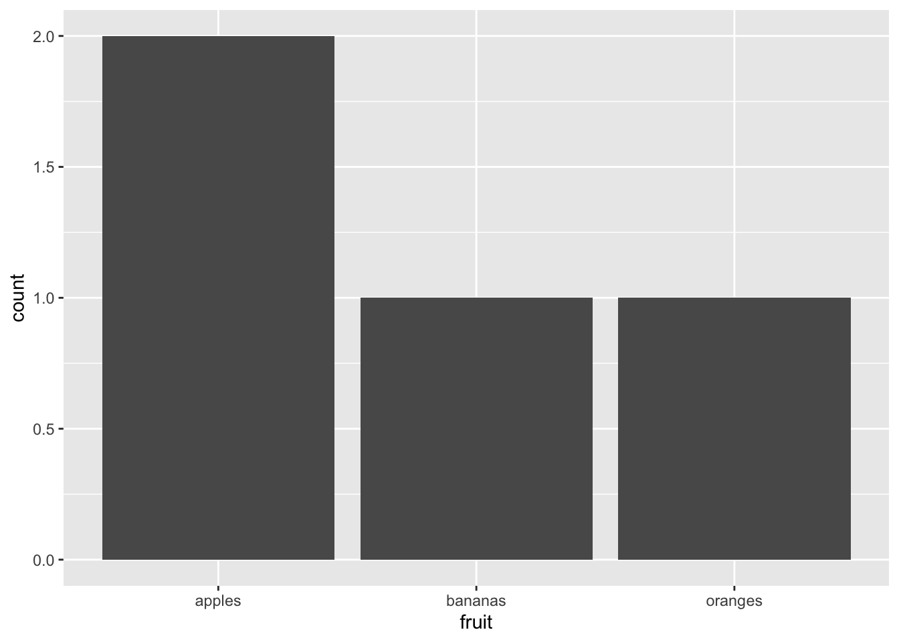
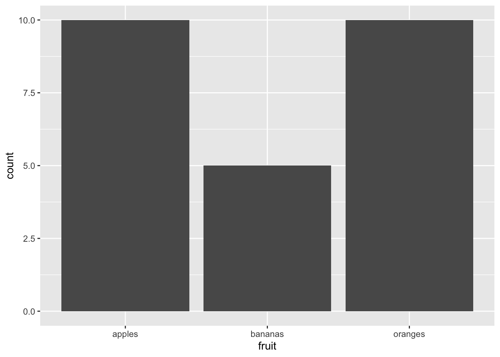
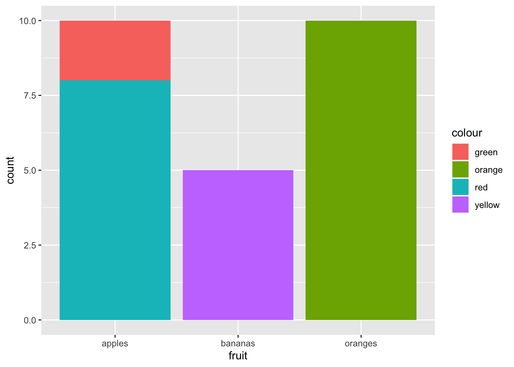
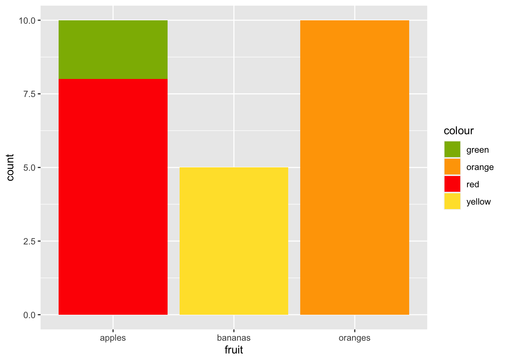
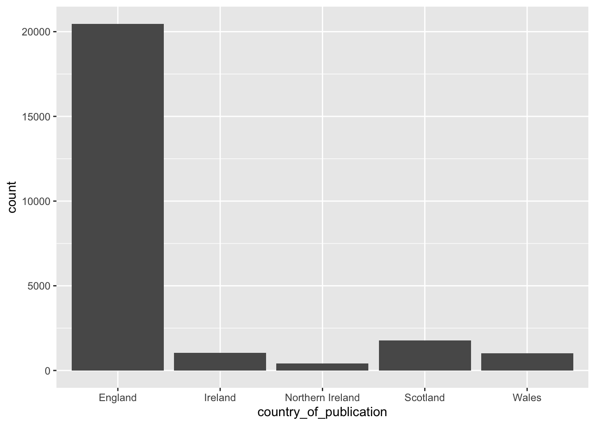

fruit = c("apples", "bananas", "oranges", "apples")
colour = c("green", "yellow", "orange", "red")
amount = c(2,5,10,8)6 Using R and the tidyverse
R is a programming language, much like Python. It is widely used by data scientists, those using digital humanities techniques, and in the social sciences.
It has some advantages for a novice to programming. Its widely-used platform (called an Integrated Programming Environment- an IDE) for the language called R-Studio makes it relatively easy for beginners. A lot of this is because of developers who have extended the functionality of the base language greatly, particularly a suite of extra functions known collectively as the ‘tidyverse’.
The methods section of this book may be challenging if you are a complete beginner to R and have not learned any other programming language. If you’d like to get started with R and the tidyverse in earnest, I recommend some of these tutorials and books:
http://dh-r.lincolnmullen.com
https://blog.shotwell.ca/posts/why_i_use_r/
https://r4ds.had.co.nz
Getting started
The only requirements to get through these tutorials are to install R and R-Studio, as well as some data which needs to be downloaded separately.
Download R and R-Studio
R and R-Studio are two separate things. R will work without R-studio, but not the other way around, and so it should be downloaded first. Go to the download page, select a download mirror, and download the correct version for your operating system. Follow the installation instructions if you get stuck.
Next, download R-Studio. You’ll want the desktop version and again, download the correct version and follow the instructions. When both of these are installed, open R-Studio, and it should run the underlying software R automatically.
At this point, I would highly recommend reading a beginners guide to R and R-studio, such as this one, to familiarise yourself with the layout and some of the basic functionality of R-Studio. Once you understand where to type and save code, where your files and dataframes live, and how to import data from spreadsheets, you should be good to start experimenting with newspaper data.
R relies on lots of additional packages for full functionality, and you’ll need to install these by using the function install.packages(), followed by the package name, in inverted commas. I recommend doing this to install the tidyverse suite of packages by running install.packages('tidyverse') in the Console window (the bottom-left of the screen in R-Studio) as you’ll end up using this all the time.
Using R
Base R types
It is worth understanding the main types of data that you’ll come across, in your environment window.
First, up are dataframes. These are the spreadsheet-like objects which you’ll use in most analyses. They have rows and columns.
Another key object type is a vector. A vector is like a python list. A vector can be a single column in a dataframe (spreadsheet), which means they are used very often in R to manipulate data. A vector can have different types: for example, a character vector looks like this c("apples", "bananas", "oranges")
A dataframe in R can be thought of a number of vertically aligned vectors.
A vector is created with the command c(), with each item in the vector placed between the brackets, and followed by a comma. If your vector is a vector of words, the words need to be in inverted commas or quotation marks.
You can create a dataframe using the data.frame() command. You just need to pass the function each of your vectors, which will become your columns.
fruit_data = data.frame(fruit,colour,amount, stringsAsFactors = FALSE)
fruit_data fruit colour amount
1 apples green 2
2 bananas yellow 5
3 oranges orange 10
4 apples red 8Notice above that the third column, the amount, has
All the items in a vector are coerced to the same type. So if you try to make a vector with a combination of numbers and strings, the numbers will be converted to strings. I wouldn’t worried too much about that for now.
So for example if you create this vector, the numbers will get converted into strings.
fruit = c("apples", 5, "oranges", 3)
fruit[1] "apples" "5" "oranges" "3" Tidyverse
Most of the work in these notebooks is done using a set of packages developed for R called the ‘tidyverse’. These enhance and improve a large range of R functions, with much nice syntax - and they’re faster too. It’s really a bunch of individual packages for sorting, filtering and plotting data frames. They can be divided into a number of diferent categories.
All these functions work in the same way. The first argument is the thing you want to operate on. This is nearly always a data frame. After come other arguments, which are often specific columns, or certain variables you want to do something with.
You installed the package in the last notebook. Make sure the library is loaded by running the following in an R chunk in a notebook:
library(tidyverse)Here are a couple of the most important ones
select(), pull()
select() allows you to select columns. You can use names or numbers to pick the columns, and you can use a - sign to select everything but a given column.
Using the fruit data frame we created above: We can select just the fruit and colour columns:
select(fruit_data, fruit, colour) fruit colour
1 apples green
2 bananas yellow
3 oranges orange
4 apples redSelect everything but the colour column:
select(fruit_data, -colour) fruit amount
1 apples 2
2 bananas 5
3 oranges 10
4 apples 8Select the first two columns:
select(fruit_data, 1:2) fruit colour
1 apples green
2 bananas yellow
3 oranges orange
4 apples redgroup_by(), tally(), summarise()
The next group of functions group things together and count them. Sounds boring but you would be amazed by how much of data science just seems to be doing those two things in various combinations.
group_by() puts rows with the same value in a column of your dataframe into a group. Once they’re in a group, you can count them or summarise them by another variable.
First you need to create a new dataframe with the grouped fruit.
grouped_fruit = group_by(fruit_data, fruit)Next we use tally(). This counts all the instances of each fruit group.
tally(grouped_fruit)# A tibble: 3 × 2
fruit n
<chr> <int>
1 apples 2
2 bananas 1
3 oranges 1Now the apples are grouped together rather than being two separate rows, and there’s a new column called n, which contains the result of the count.
If we specify that we want to count by something else, we can add that in as a ‘weight’, by adding wt = as an argument in the function.
tally(grouped_fruit, wt = amount)# A tibble: 3 × 2
fruit n
<chr> <dbl>
1 apples 10
2 bananas 5
3 oranges 10That counts the amounts of each fruit, ignoring the colour.
filter()
Another quite obviously useful function. This filters the dataframe based on a condition which you set within the function. The first argument is the data to be filtered. The second is a condition (or multiple condition). The function will return every row where that condition is true.
Just red fruit:
filter(fruit_data, colour == 'red') fruit colour amount
1 apples red 8Just fruit with at least 5 pieces:
filter(fruit_data, amount >=5) fruit colour amount
1 bananas yellow 5
2 oranges orange 10
3 apples red 8sort(), arrange(), top_n()
Another useful set of functions, often you want to sort things. The function arrange() does this very nicely. You specify the data frame, and the variable you would like to sort by.
arrange(fruit_data, amount) fruit colour amount
1 apples green 2
2 bananas yellow 5
3 apples red 8
4 oranges orange 10Sorting is ascending by default, but you can specify descending using desc():
arrange(fruit_data, desc(amount)) fruit colour amount
1 oranges orange 10
2 apples red 8
3 bananas yellow 5
4 apples green 2If you `sortarrange() by a list of characters, you’ll get alphabetical order:
arrange(fruit_data, fruit) fruit colour amount
1 apples green 2
2 apples red 8
3 bananas yellow 5
4 oranges orange 10You can sort by multiple things:
arrange(fruit_data, fruit, desc(amount)) fruit colour amount
1 apples red 8
2 apples green 2
3 bananas yellow 5
4 oranges orange 10Notice that now red apples are first.
left_join(), inner_join(), anti_join()
Piping
Another great feature of the tidyverse is that you can ‘pipe’ commands through a bunch of functions. This means that you can do one operate, and pass the result to another operation. The previous dataframe is passed as the first argument of the next function by using the pipe %>% command. It works like this:
fruit_data %>%
filter(colour != 'yellow') %>% # remove any yellow colour fruit
group_by(fruit) %>% # group the fruit by type
tally(amount) %>% # count each group
arrange(desc(n)) # arrange in descending order of the count# A tibble: 2 × 2
fruit n
<chr> <dbl>
1 apples 10
2 oranges 10That code block, written in prose: “take fruit data, remove any yellow colour fruit, count the fruits by type and amount, and arrange in descending order of the total”
Plotting using ggplot()
The tidyverse includes a pretty great plotting library called ggplot2. This can be used by piping your dataframe to a function called ggplot(). The basic idea is that you add your data, then you can add plot elements which are called geoms. Some common ones are geom_line(), geom_bar() and geom_point().
To the geom function you add aesthetics, which is basically telling the function which bits of your data should be responsible for which parts of the visualisation. These are added using aes(). I’ll explain a bit more about some of these aesthetics as I go along.
As an example:
Bar chart of different types of fruit (one each of bananas and oranges, two types of apple)
fruit_data %>% ggplot() + geom_bar(aes(x = fruit))
Counting the total amount of fruit:
fruit_data %>% ggplot() + geom_bar(aes(x = fruit, weight = amount))
Charting amounts and fruit colours:
fruit_data %>% ggplot() + geom_bar(aes(x = fruit, weight = amount, fill = colour)) 
And just because it annoys me having random colours, we can map them to the actual colours:
fruit_data %>%
ggplot() +
geom_bar(aes(x = fruit, weight = amount, fill = colour)) +
scale_fill_manual(values = c("orange" = "orange",
"green" = "#8db600",
"red" = "#ff0800",
"yellow" = "#ffe135"))
Doing this with newspaper data
Let’s load a dataset of metadata for all the titles held by the library, and practise some counting and sorting on real-world data.
Download from here: British Library Research Repository
You would need to extract into your project folder first, if you’re following along:
read_csv reads the csv from file.
title_list = read_csv('data/BritishAndIrishNewspapersTitleList_20191118.csv')Rows: 24927 Columns: 24
── Column specification ────────────────────────────────────────────────────────
Delimiter: ","
chr (18): publication_title, edition, preceding_titles, succeeding_titles, p...
dbl (6): title_id, nid, nlp, first_date_held, publication_date_one, publica...
ℹ Use `spec()` to retrieve the full column specification for this data.
ℹ Specify the column types or set `show_col_types = FALSE` to quiet this message.Select some particularly relevant columns:
title_list %>%
select(publication_title,
first_date_held,
last_date_held,
country_of_publication)# A tibble: 24,927 × 4
publication_title first_date_held last_date_held country_of_publication
<chr> <dbl> <chr> <chr>
1 "Corante, or, Newes fr… 1621 1621 The Netherlands
2 "Corante, or, Newes fr… 1621 1621 The Netherlands
3 "Corante, or, Newes fr… 1621 1621 The Netherlands
4 "Corante, or, Newes fr… 1621 1621 England
5 "Courant Newes out of … 1621 1621 The Netherlands
6 "A Relation of the lat… 1622 1622 England
7 "A Relation of the lat… 1622 1622 England
8 "A Relation of the lat… 1622 1622 England
9 "A Relation of the lat… 1622 1622 England
10 "A Relation of the lat… 1622 1622 England
# ℹ 24,917 more rowsArrange in order of the latest date of publication, and then by the first date of publication:
title_list %>%
select(publication_title,
first_date_held,
last_date_held,
country_of_publication) %>%
arrange(desc(last_date_held), first_date_held)# A tibble: 24,927 × 4
publication_title first_date_held last_date_held country_of_publication
<chr> <dbl> <chr> <chr>
1 Shrewsbury chronicle 1773 Continuing England
2 London times|The Times… 1788 Continuing England
3 Observer (London)|Obse… 1791 Continuing England
4 Limerick chronicle 1800 Continuing Ireland
5 Hampshire chronicle|Th… 1816 Continuing England
6 The Inverness Courier,… 1817 Continuing Scotland
7 Sunday times (London)|… 1822 Continuing England
8 The Impartial Reporter… 1825 Continuing Northern Ireland
9 Impartial reporter and… 1825 Continuing Northern Ireland
10 Aberdeen observer 1829 Continuing Scotland
# ℹ 24,917 more rowsGroup and count by country of publication:
title_list %>%
select(publication_title,
first_date_held,
last_date_held,
country_of_publication) %>%
arrange(desc(last_date_held)) %>%
group_by(country_of_publication) %>%
tally()# A tibble: 40 × 2
country_of_publication n
<chr> <int>
1 Bermuda Islands 24
2 Cayman Islands 1
3 England 20465
4 England|Hong Kong 1
5 England|India 2
6 England|Iran 2
7 England|Ireland 10
8 England|Ireland|Northern Ireland 10
9 England|Jamaica 7
10 England|Malta 2
# ℹ 30 more rowsArrange again, this time in descending order of number of titles for each country:
title_list %>%
select(publication_title,
first_date_held,
last_date_held,
country_of_publication) %>%
arrange(desc(last_date_held)) %>%
group_by(country_of_publication) %>%
tally() %>%
arrange(desc(n))# A tibble: 40 × 2
country_of_publication n
<chr> <int>
1 England 20465
2 Scotland 1778
3 Ireland 1050
4 Wales 1019
5 Northern Ireland 415
6 England|Wales 58
7 Bermuda Islands 24
8 England|Scotland 13
9 England|Ireland 10
10 England|Ireland|Northern Ireland 10
# ℹ 30 more rowsFilter only those with more than 100 titles:
title_list %>%
select(publication_title,
first_date_held,
last_date_held,
country_of_publication) %>%
arrange(desc(last_date_held)) %>%
group_by(country_of_publication) %>%
tally() %>%
arrange(desc(n)) %>%
filter(n>=100)# A tibble: 5 × 2
country_of_publication n
<chr> <int>
1 England 20465
2 Scotland 1778
3 Ireland 1050
4 Wales 1019
5 Northern Ireland 415Make a simple bar chart:
title_list %>%
select(publication_title,
first_date_held,
last_date_held,
country_of_publication) %>%
arrange(desc(last_date_held)) %>%
group_by(country_of_publication) %>%
tally() %>%
arrange(desc(n)) %>%
filter(n>=100) %>%
ggplot() +
geom_bar(aes(x = country_of_publication, weight = n))
Recommended Reading
This has been a very quick introduction to R. There are lots of resources available to learn more, including:
The Pirate’s Guide to R, a good beginners guide to base R